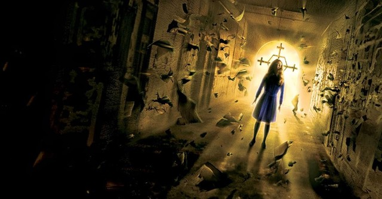

Synopsis
Rose Da Silva (Radha Mitchell) takes her adopted daughter, Sharon (Jodelle Ferland), to the abandoned town of Silent Hill in West Virginia after the girl is plagued by nightmares and sleepwalking that call out the town's name.
Upon entering the town, Rose crashes her car and awakens to find Sharon is missing. She quickly discovers that Silent Hill is trapped in a multi-layered reality: a desolate Fog World and a terrifying, rusting Otherworld filled with monstrous creatures. Rose is joined by police officer Cybil Bennett (Laurie Holden) as they navigate the terrifying streets in search of Sharon.
As they venture deeper, they uncover the dark history of the town, revolving around a young girl named Alessa Gillespie who was brutally burned alive by a fanatical cult, led by the wicked Christabella (Alice Krige), years ago. The monsters and the dark dimension are revealed to be manifestations of Alessa's eternal pain and rage.
Rose realizes that Sharon's disappearance is connected to Alessa and the cult. While Rose faces horrors in the alternate dimensions, her husband, Christopher (Sean Bean), searches the truly abandoned version of Silent Hill in the real world, unable to perceive the danger his wife is in.
The film culminates with Rose confronting the cult in the church, determined to reunite with Sharon by facing the source of the town's curse and the vengeful spirit that controls its terrifying reality.
